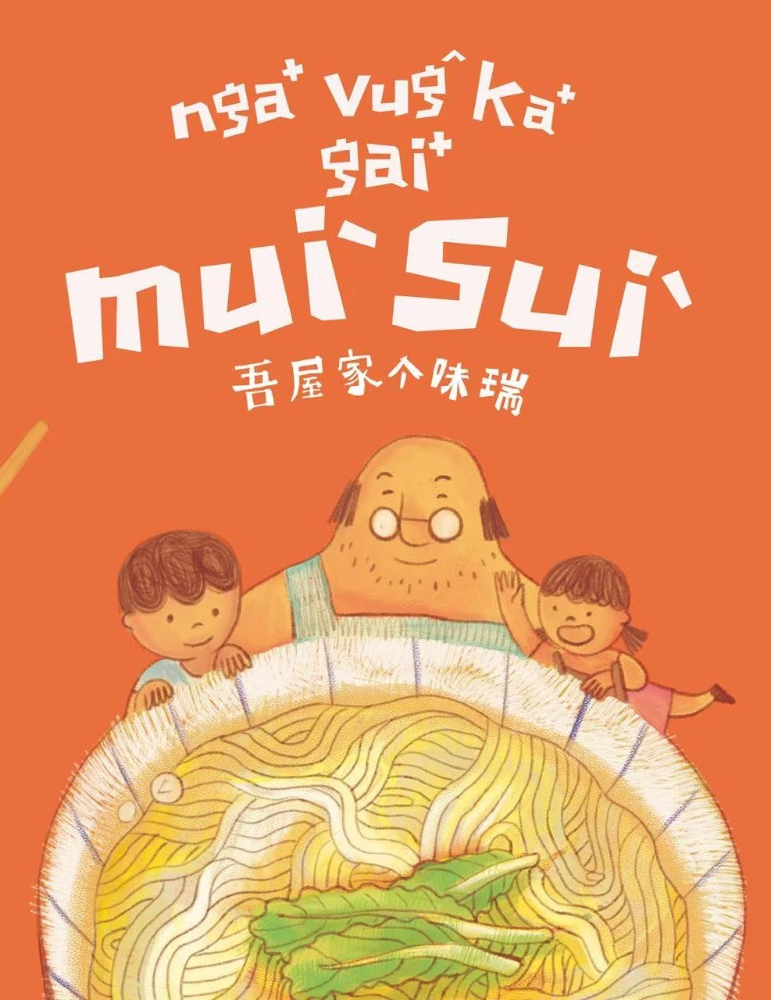

《吾屋家个味瑞》
剧情简介
《吾屋家个味瑞》是台中市政府客家事务委员会推出的首部客家儿童音乐剧，改编自同名原创绘本，由深耕亲子剧20年的玉米鸡剧团制作，通过戏剧、客语童谣、歌唱与舞蹈，生动展现台中山城的文化风貌。
剧情以“寻找我家的味道”为核心，带领观众回到客家人胼手胝足的奋斗岁月，引导孩子思考“我是谁”、“我来自哪里”等身份认同问题。演出阵容强大，包括果陀剧场的江国生、演员仇泠，以及东势在地乐团“明哥菜车”的客语演唱，并融入《好食麼个》《大麵》等经典客家童谣。
该剧不仅是一场艺术盛宴，更致力于文化传承，符合联合国永续发展目标，通过公益场次让山城孩子感受客家文化的深邃与温情，首演反响十分热烈。